第03讲 解题技巧专题：一元一次方程中含参数的问题
第03讲 解题技巧专题：一元一次方程中含参数的问题
(6类热点题型讲练)

目录
【考点一 利用一元一次方程的定义求字母参数】 1
【考点二 利用一元一次方程的解求代数式的值】 2
【考点三 利用一元一次方程的解相同求字母参数】 4
【考点四 求一元一次方程含字母参数的方程的解】 5
【考点五 一元一次方程含字母参数的解为整数解问题】 7
【考点六 一元一次方程含字母参数的新定义型问题】 10

【考点一 利用一元一次方程的定义求字母参数】
例题：（23-24七年级下·湖南衡阳·期中）若关于 的方程
的方程
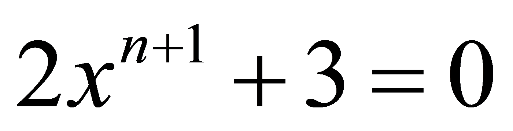
是一元一次方程，则 的值是 ．
的值是 ．【变式训练】
1．（23-24七年级上·四川泸州·开学考试）已知方程 是关于的一元一次方程，则
是关于的一元一次方程，则 的值是 ．
的值是 ．
2．（23-24七年级下·重庆万州·期末）若
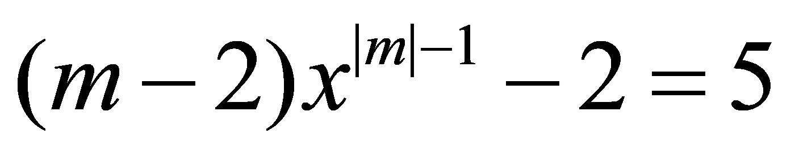
是关于x的一元一次方程，则m的值是 ．3．（23-24七年级上·江苏无锡·阶段练习）已知 是关于x的一元一次方程，则m的值 ．
是关于x的一元一次方程，则m的值 ．
【考点二 利用一元一次方程的解求代数式的值】
例题：（23-24七年级上·江苏扬州·期末）如果 是方程
是方程 的解，那么的值是 ．
的解，那么的值是 ．
【变式训练】
1．（23-24七年级上·湖南株洲·期末）若 是关于x的方程
是关于x的方程
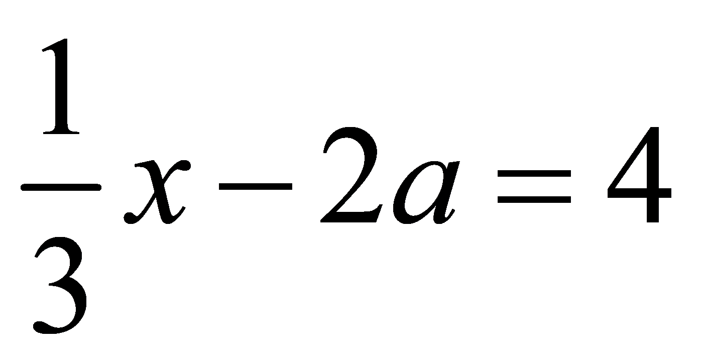
的解，则的值为 ．2．（23-24九年级上·福建福州·开学考试）若是关于x的方程 的解，则代数式
的解，则代数式
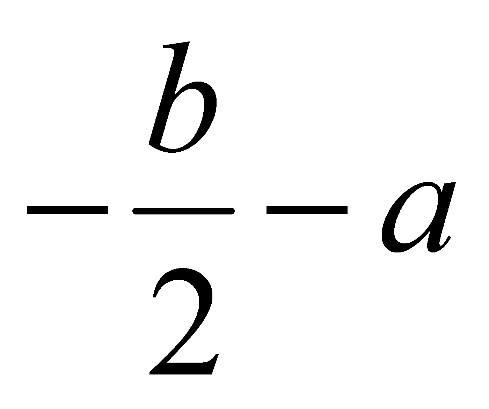
的值是 ．3．（23-24七年级上·陕西西安·阶段练习）如果 是方程
是方程 的解，那么
的解，那么 ．
．
4．（24-25九年级上·全国·课后作业）已知关于x的一元一次方程 的解是
的解是 ，则
，则 的值为 ．
的值为 ．
【考点三 利用一元一次方程的解相同求字母参数】
例题：（23-24七年级上·广东湛江·期末）若方程 与方程
与方程
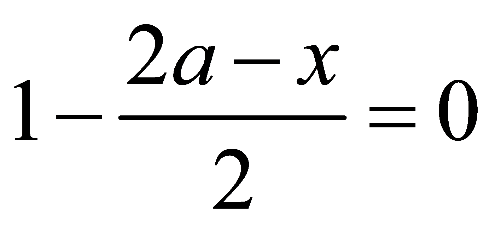
有相同的解，则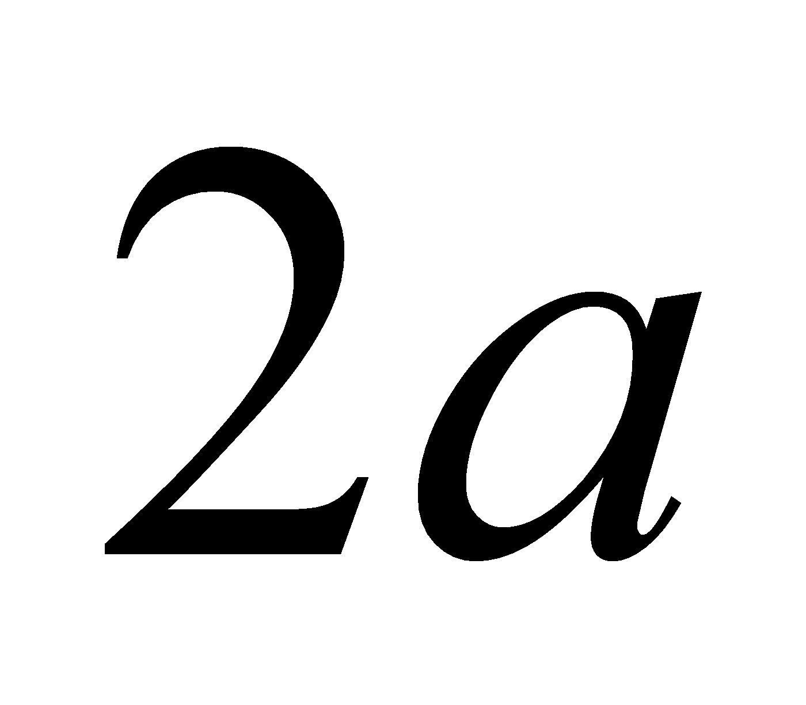
的值等于 ．【变式训练】
1．（23-24七年级下·福建泉州·期末）如果关于的方程
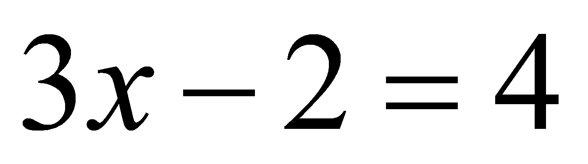
和方程 的解相同，那么的值为 ．
的解相同，那么的值为 ．2．（23-24七年级下·四川眉山·期中）已知关于的方程
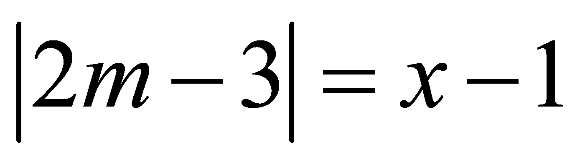
的解与方程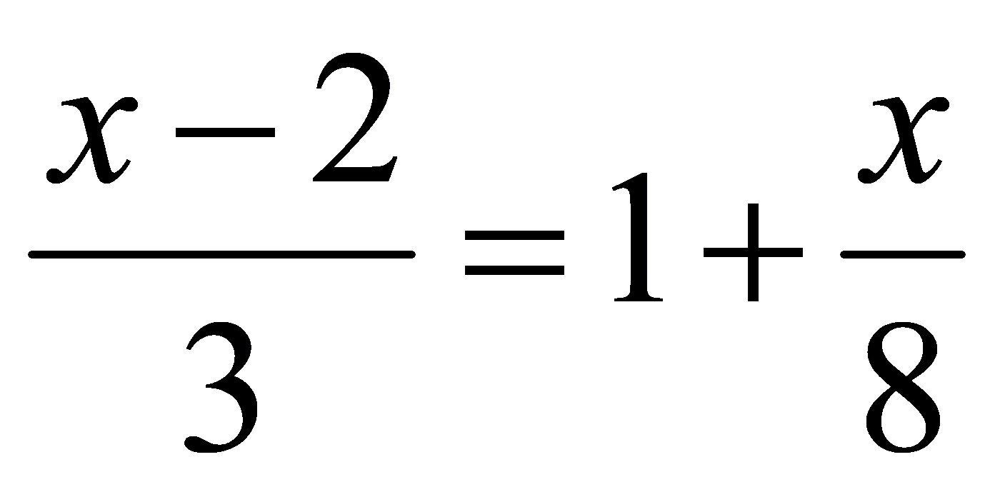
的解相同，则
【考点四 求一元一次方程含字母参数的方程的解】
例题：（23-24七年级上·湖北武汉·期末）如果关于的方程 的解
的解 ，则关于
，则关于 的方程
的方程 的解
的解 ．
．
【变式训练】
1．（23-24七年级上·江苏扬州·期中）已知关于的一元一次方程 的解为，则关于的一元一次方程
的解为，则关于的一元一次方程 的解为 ．
的解为 ．
2．（23-24七年级上·浙江嘉兴·期末）已知为实数，关于的方程 的解为
的解为 ，则关于的方程
，则关于的方程 的解为 ．
的解为 ．
3．（23-24七年级上·江苏南通·期末）若关于的一元一次方程
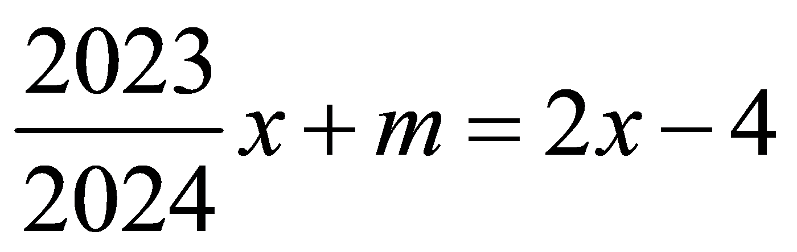
的解为 ，则关于的一元一次方程
，则关于的一元一次方程 解为 ．
解为 ．【考点五 一元一次方程含字母参数的解为整数解问题】
例题：（23-24七年级上·福建福州·期末）若关于的一元一次方程
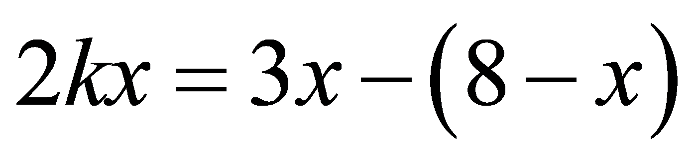
有非负整数解，则符合条件的所有整数 的值和为 ．
的值和为 ．【变式训练】
1．（23-24七年级上·浙江台州·期中）关于的一元一次方程
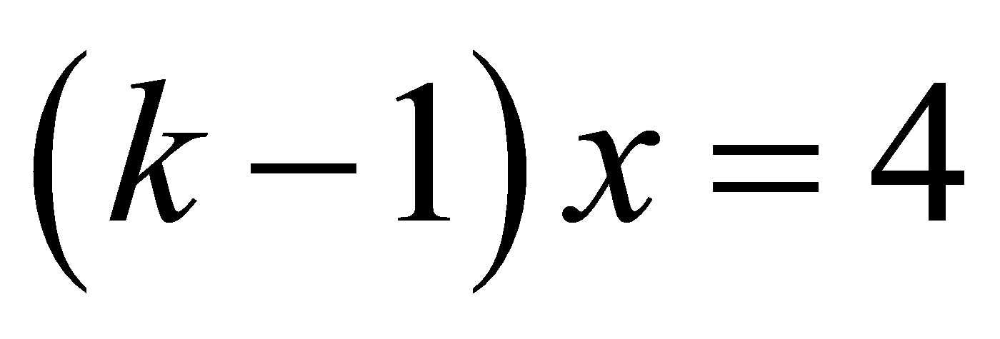
的解是整数，则符合条件的所有整数的值的和为 ．2．（23-24七年级上·湖北恩施·阶段练习）若关于x的方程 的解是整数，则非负整数m的值为 ．
的解是整数，则非负整数m的值为 ．
3．（23-24七年级上·江西上饶·阶段练习）关于x的方程
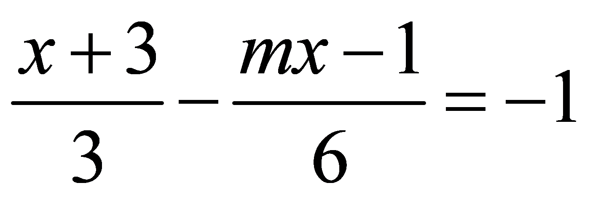
的解为整数，则符合条件的正整数m的值为 ．4．（23-24七年级下·重庆·阶段练习）已知关于的方程
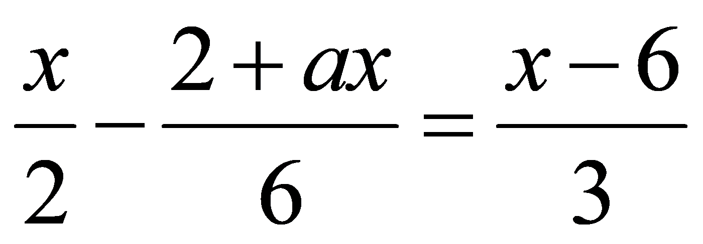
的解为负整数，则整数的所有取值的和为 ．【考点六 一元一次方程含字母参数的新定义型问题】
例题：（24-25七年级上·黑龙江哈尔滨·阶段练习）解一元一次方程时，发现这样一种特殊情况： 的解为
的解为 ，恰巧
，恰巧
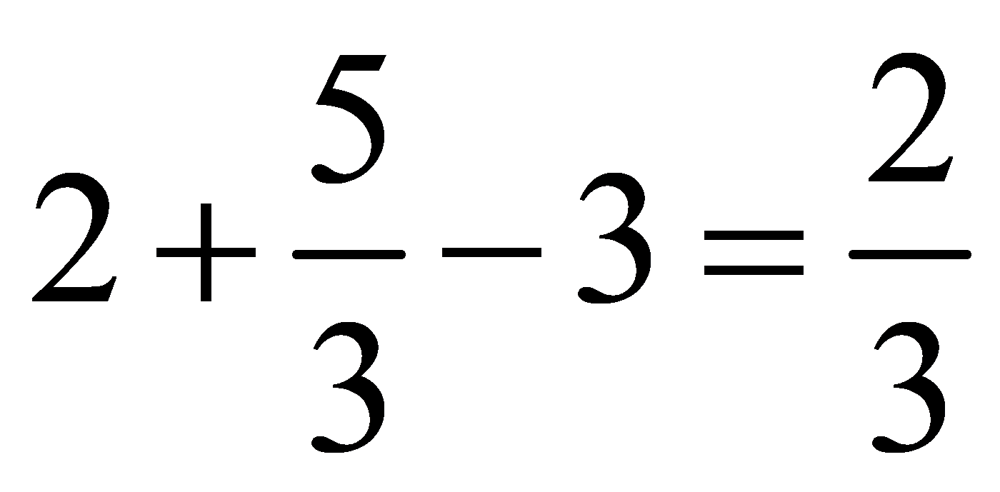
，我们将这种类型的方程做如下定义：如果一个方程 的解满足
的解满足 ，则称它为“巧合方程”，请解决以下问题．
，则称它为“巧合方程”，请解决以下问题．(1)请判断方程
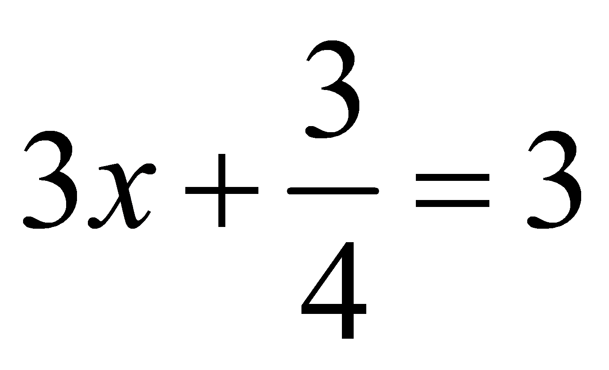
是否是巧合方程：______（直接写“是”或“不是”）；(2)已知方程 是巧合方程，请求出b的值；
是巧合方程，请求出b的值；
(3)若 和
和
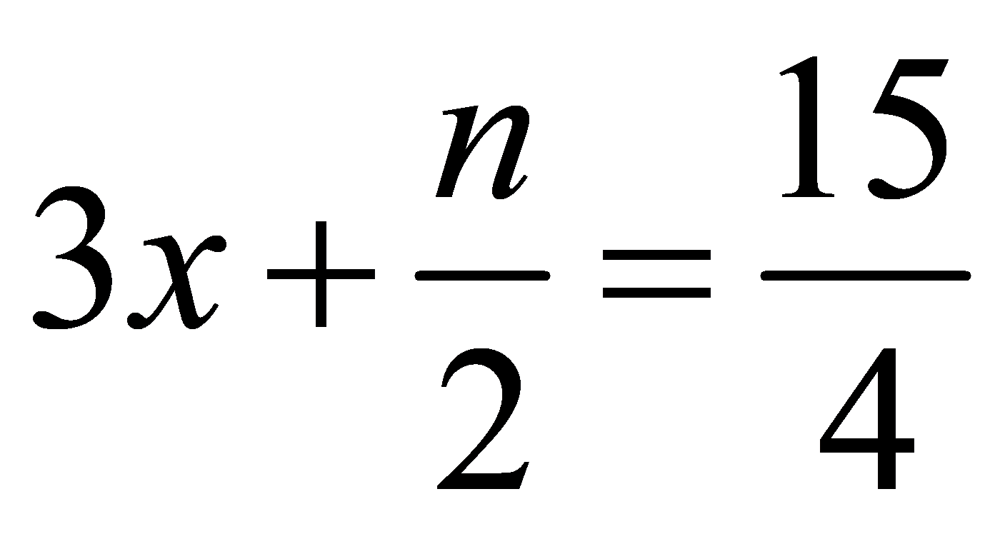
都是巧合方程，请求出 的值．
的值．【变式训练】
1．（24-25七年级上·全国·单元测试）定义：如果两个一元一次方程的解互为相反数，我们就称这两个方程为“兄弟方程”．如方程 和
和 为“兄弟方程”．
为“兄弟方程”．
(1)若关于x的方程 与方程
与方程 是“兄弟方程”，求m的值；
是“兄弟方程”，求m的值；
(2)若两个“兄弟方程”的两个解的差为6，其中一个解为n，求n的值；
(3)若关于x的方程 和
和
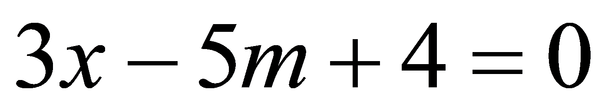
是“兄弟方程”，求m的值．2．（24-25七年级上·黑龙江哈尔滨·阶段练习）已知a、b为有理数，且 ，若关于x的一元一次方程
，若关于x的一元一次方程 的解为
的解为 ，则此方程为“合并式方程”．例如：
，则此方程为“合并式方程”．例如： ，
， ∴此方程为“合并式方程”，请根据上述定义解答下列问题：
∴此方程为“合并式方程”，请根据上述定义解答下列问题：
(1)一元一次方程 是否是“合并式方程”？并说明理由；
是否是“合并式方程”？并说明理由；
(2)若关于x的一元一次方程
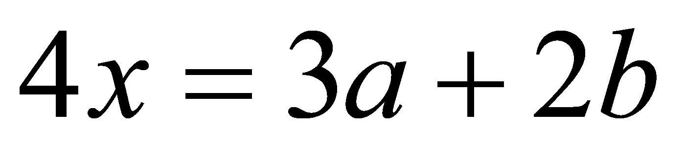
是“合并式方程”，且它的解为 ，求a、b的值．
，求a、b的值．3．（23-24七年级下·浙江金华·开学考试）定义：如果两个一元一次方程的解之和为1，我们就称这两个方程为“美好方程”．例如：方程 和
和 为“美好方程”．
为“美好方程”．
(1)方程与方程 是“美好方程”吗？请说明理由；
是“美好方程”吗？请说明理由；
(2)若关于x的方程 与方程
与方程
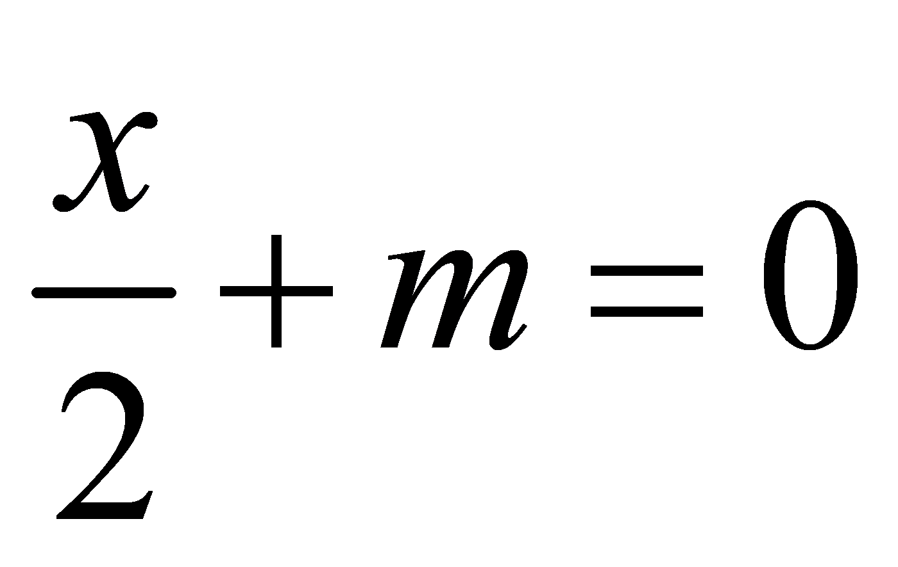
是“美好方程”，求m的值；(3)若关于x方程 与
与 是“美好方程”，求n的值．
是“美好方程”，求n的值．
4．（24-25七年级上·北京·阶段练习）观察下列两个等式： ，
，
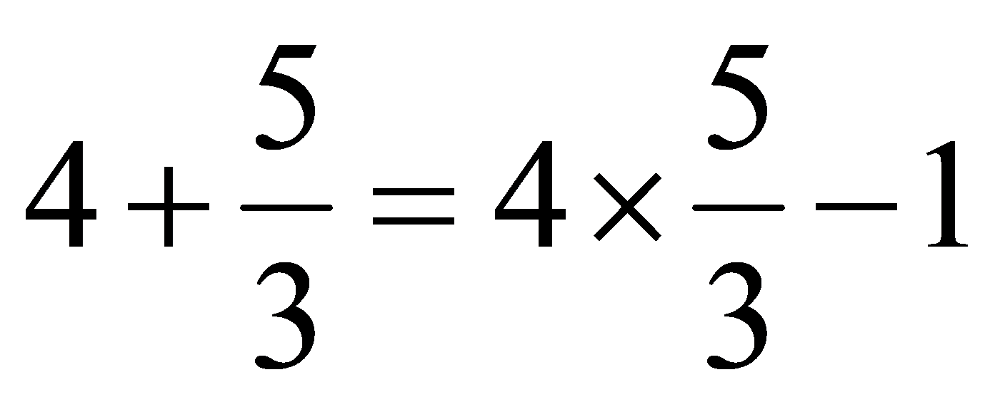
，给出定义如下：我们称使等式 成立的一对有理数a，b为“成达数对”，记为
成立的一对有理数a，b为“成达数对”，记为 ，如：数对
，如：数对 、
、 都是“成达数对”．
都是“成达数对”．(1)数对 、
、
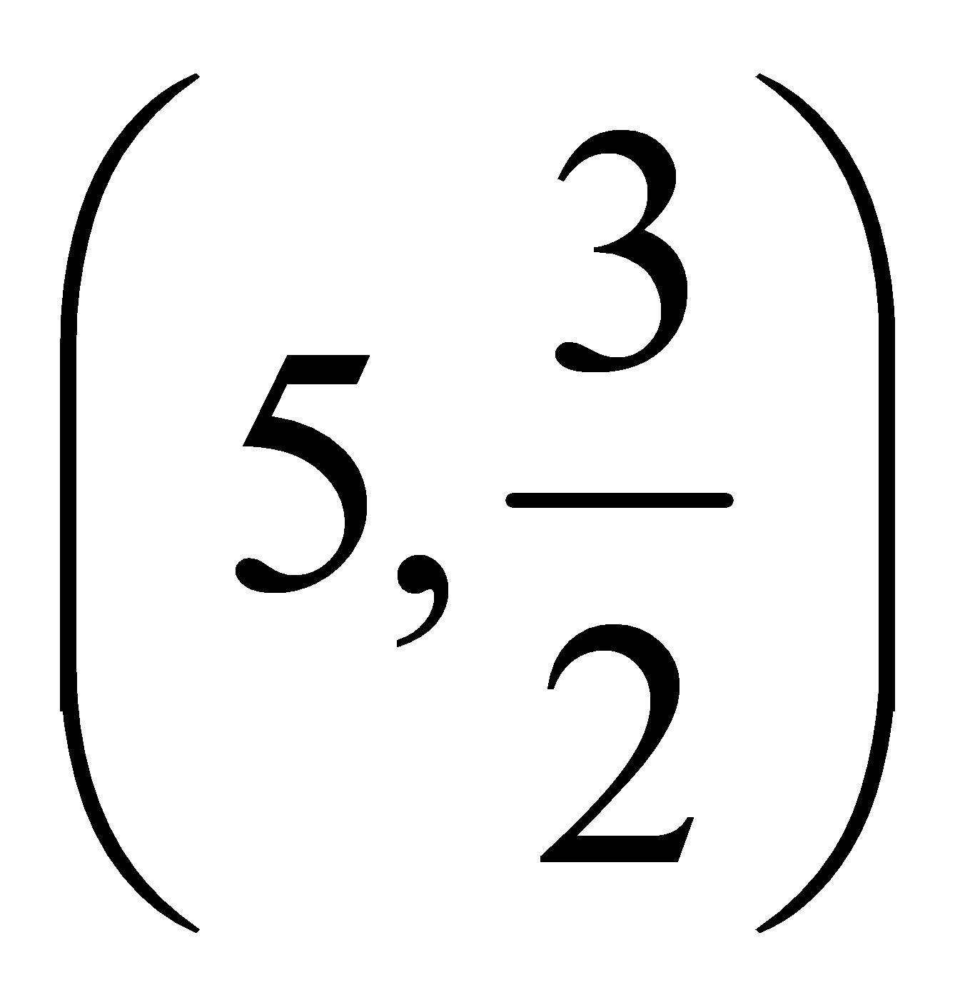
中是“成达数对”的是______；(2)若 是“成达数对”，求a的值；
是“成达数对”，求a的值；
(3)若 是“成达数对”，则
是“成达数对”，则 ______“成达数对”（填“是”、“不是”或“不确定”）；
______“成达数对”（填“是”、“不是”或“不确定”）；
(4)请再写出一对符合条件的“成达数对”．（不能与题目中已有的数对重复）